The first step in putting together a CanJS app is sketching out the states of your application.
We’ll be building a small application called “Place My Order”. Place My Order is a
website that lets you select from available restaurants in your area, view their
menus, and purchase items for delivery. For this sample application, we’ll keep
things pretty simple. We won’t worry about registration, authentication, or
payment processing.
Let’s walk through the different states of our application.
Home
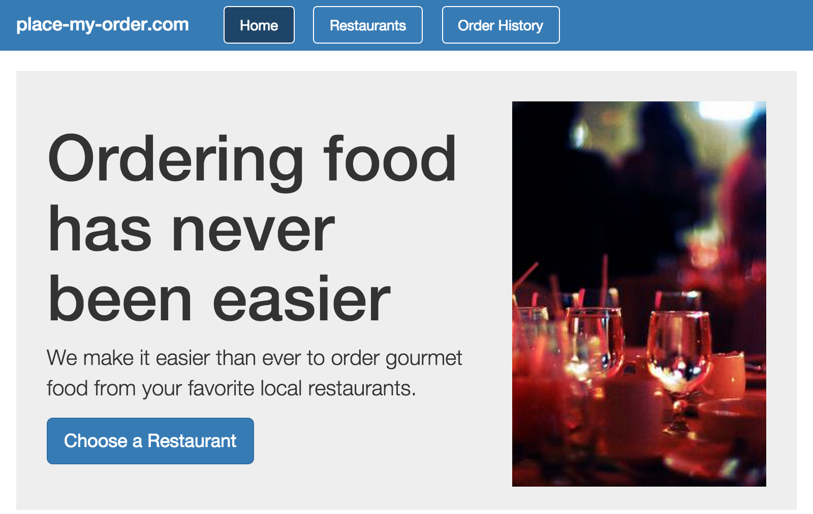
The Home state includes a header for navigation and a quick summary of the website’s
purpose. You can see the main purposes of the website:
order from a restaurant
see your order history.
Restaurants
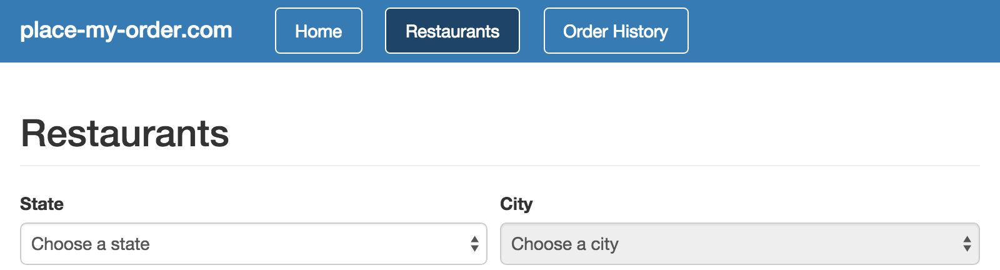
The Restaurants state is the starting point for finding a restaurant from which you
want to order. Restaurants are displayed by region. To show a list of restaurants,
first select a (U.S.) state and city.
Finding a Restaurant
The list of restaurants includes details about each restaurant, such as its rating
and hours, as well as a “Place My Order” button.
Restaurant Details
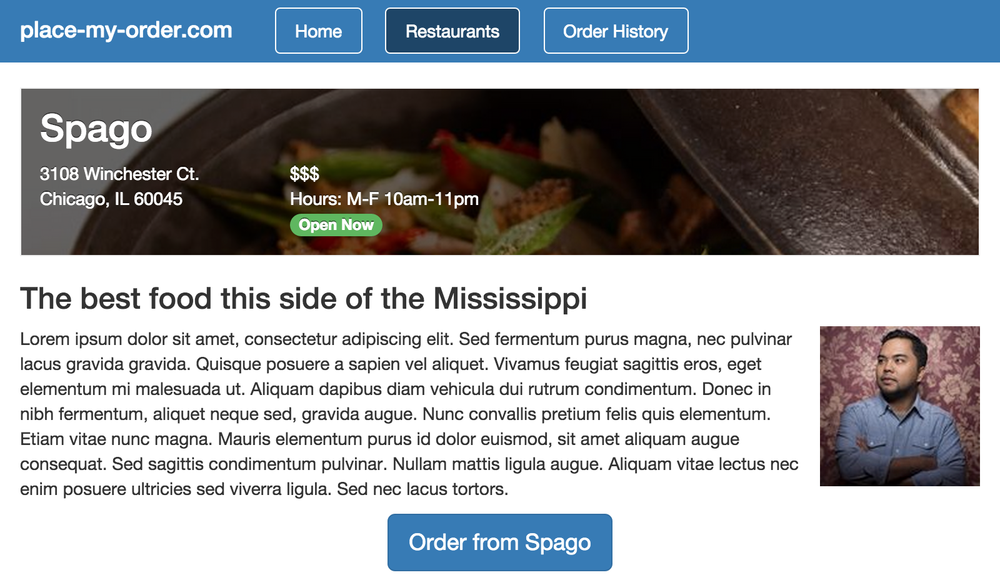
The restaurant details state displays more information about a selected restaurant and an
order button to start the ordering process.
Ordering from a Restaurant
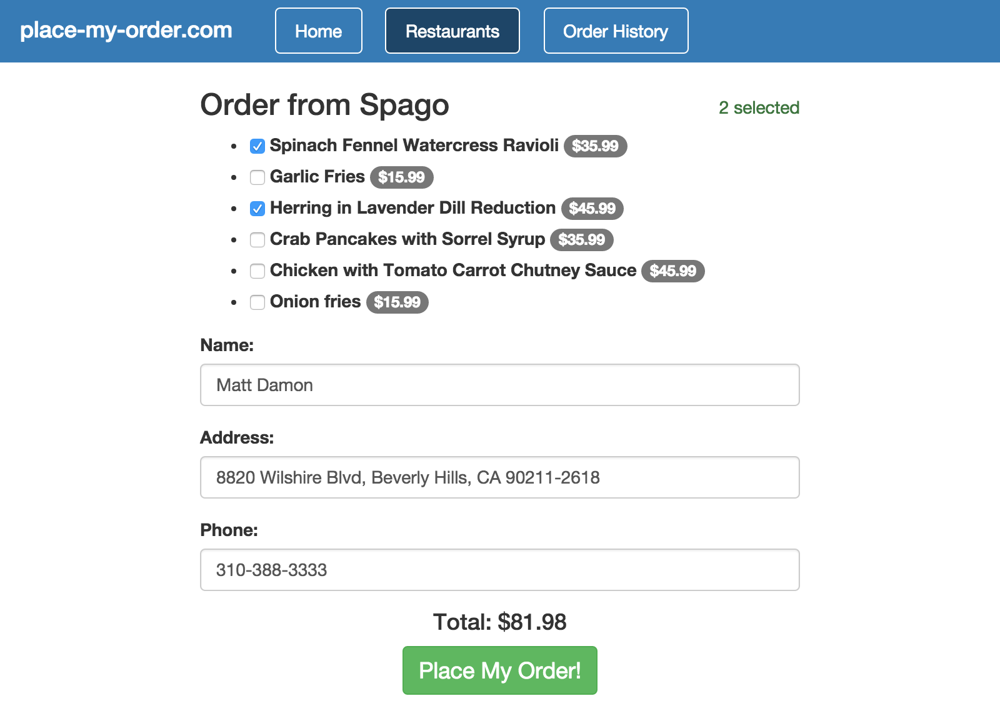
The order state has a simple menu and form for collecting the user’s information.
At the bottom of the page, we show a total amount for the order and a button to
place the order.
Order Confirmation
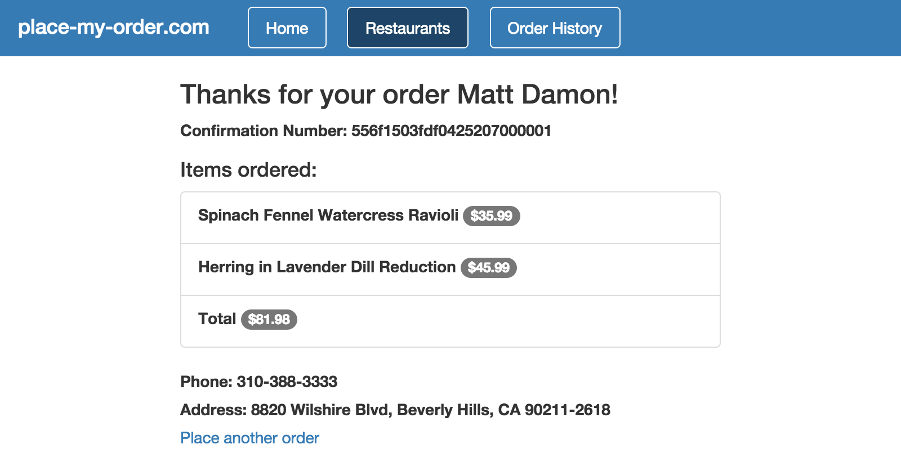
The order confirmation state shows the items the user selected, a total,
and the personal information they’ve provided with the order. Note that this state
also has a link to restart the ordering process, should the user want to place another
order at the same restaurant.
Order History
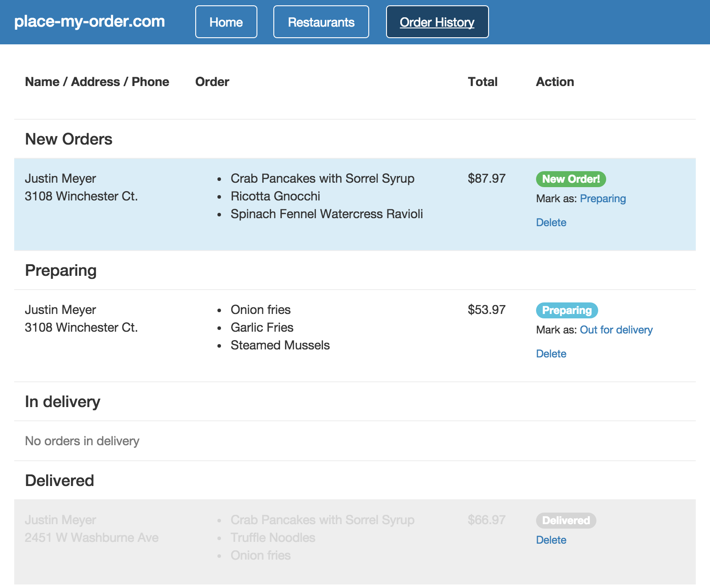
The order history state has a list of orders with different statuses: new, preparing,
in delivery, and delivered. This state allows you to mark orders with different
statuses as they move through the workflow.
In this Chapter
The first step in putting together a CanJS app is sketching out the states of your application.
We’ll be building a small application called “Place My Order”. Place My Order is a website that lets you select from available restaurants in your area, view their menus, and purchase items for delivery. For this sample application, we’ll keep things pretty simple. We won’t worry about registration, authentication, or payment processing.
Let’s walk through the different states of our application.
Home
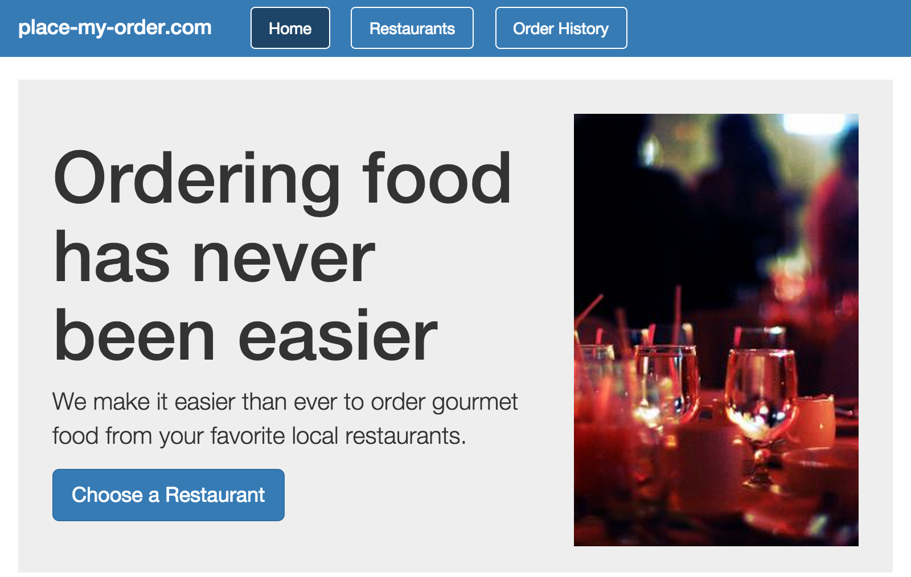
The Home state includes a header for navigation and a quick summary of the website’s purpose. You can see the main purposes of the website:
Restaurants
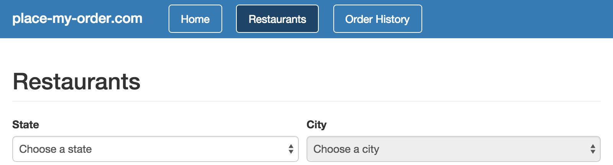
The Restaurants state is the starting point for finding a restaurant from which you want to order. Restaurants are displayed by region. To show a list of restaurants, first select a (U.S.) state and city.
Finding a Restaurant
The list of restaurants includes details about each restaurant, such as its rating and hours, as well as a “Place My Order” button.
Restaurant Details
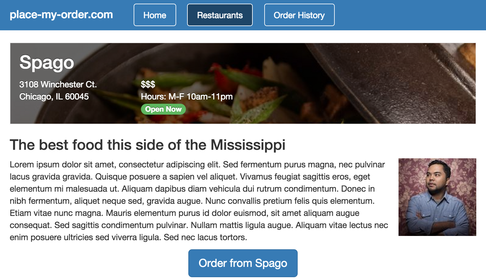
The restaurant details state displays more information about a selected restaurant and an order button to start the ordering process.
Ordering from a Restaurant
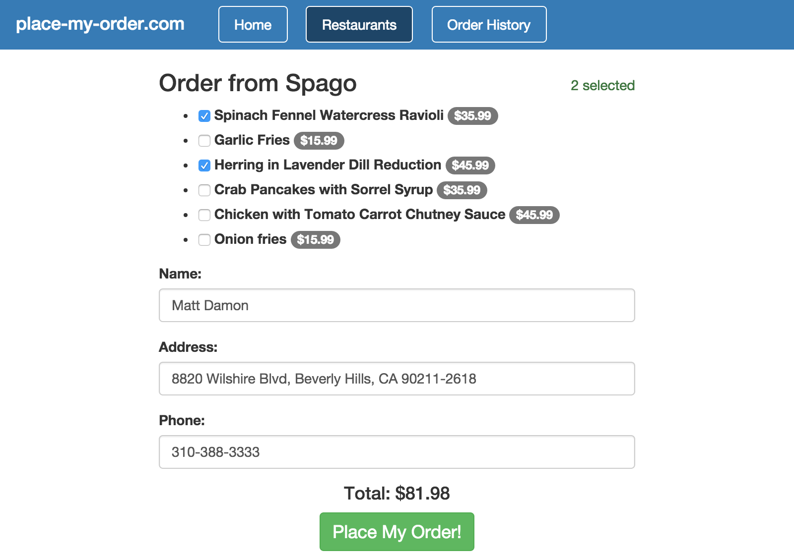
The order state has a simple menu and form for collecting the user’s information. At the bottom of the page, we show a total amount for the order and a button to place the order.
Order Confirmation
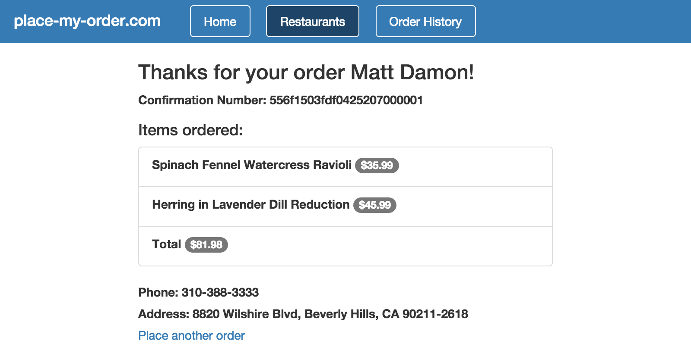
The order confirmation state shows the items the user selected, a total, and the personal information they’ve provided with the order. Note that this state also has a link to restart the ordering process, should the user want to place another order at the same restaurant.
Order History
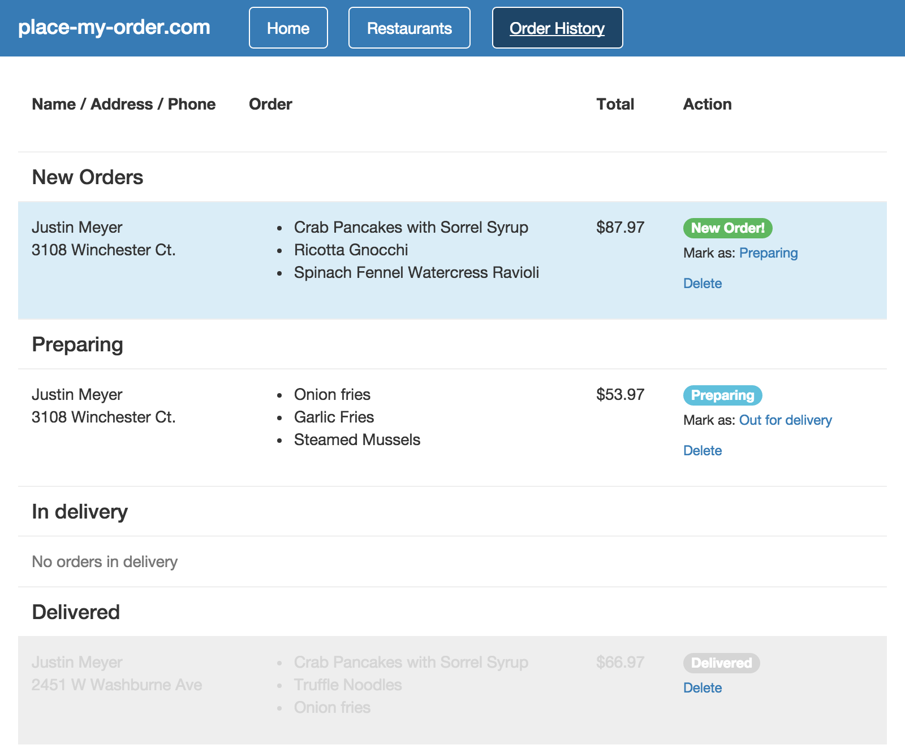
The order history state has a list of orders with different statuses: new, preparing, in delivery, and delivered. This state allows you to mark orders with different statuses as they move through the workflow.
‹ Setup Constructors ›